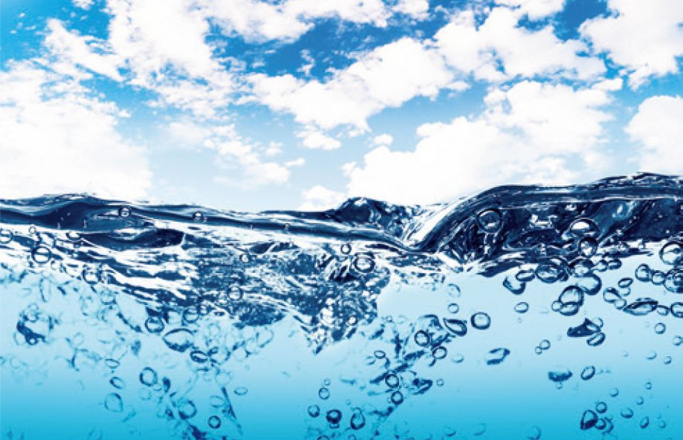

Fish It is man's most important single source of high-quality protein.
A fish is an aquatic, craniate, gill-bearing animal that lacks limbs with digits. Included in this definition are the living hagfish, lampreys, and cartilaginous and bony fish as well as various extinct related groups. Approximately 95% of living fish species are ray-finned fish, belonging to the class Actinopterygii, with around 99% of those being teleosts..
WHERE THE FISH FOUND

Fresh Water:
Essential fish habitat includes coral reefs, kelp forests, bays, wetlands, rivers, and even areas of the deep ocean that are necessary for fish reproduction, growth, feeding, and shelter.
Salt Water:
seawater, water that makes up the oceans and seas, covering more than 70 percent of Earth's surface. Seawater is a complex mixture of 96.5 percent water, 2.5 percent salts, and smaller amounts of other substances, including dissolved inorganic and organic materials, particulates, and a few atmospheric gases.